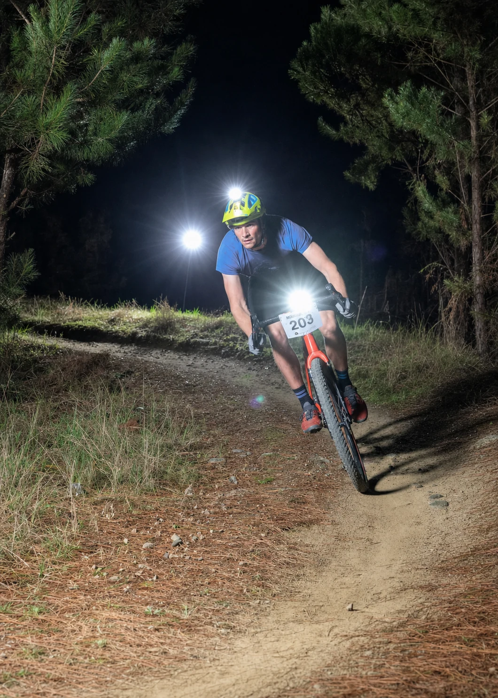

Meet the mechanic
Hey, I’m Patrick.
I run Bottle Lake Bikes from Parklands, right by Bottle Lake Forest. You’ll get clear communication and careful work, whether your bike needs a flat fixed or a full overhaul.
A workshop for all sorts of bikes.
I service mountain, gravel, road, commuter and e-bikes, from budget commuters to high-end builds. I also have experience working on scooters, prams and wheelchairs.
If weekday hours are difficult, call during the day and we can arrange an after-hours drop-off or pick-up.
It started with backyard trails.
I got into bikes around age 10, building trails with my brother on our parents’ farm. We kept our bikes running with the cheapest second-hand parts we could find and whatever tools were available.
I still remember tying an old chain to a workbench to make a chain whip and swapping a snapped frame on the garage floor. Since then, I’ve worked in cycling as a service technician, design engineer and in product sourcing. Those years of fixing, designing and sourcing bike parts led to Bottle Lake Bikes.
More life in a good bike.
I sell fully serviced used bikes, can buy your bike outright or sell it on your behalf, and can act as a buying agent if you want help finding a good second-hand bike.
